エジプト・カイロ基地周辺4
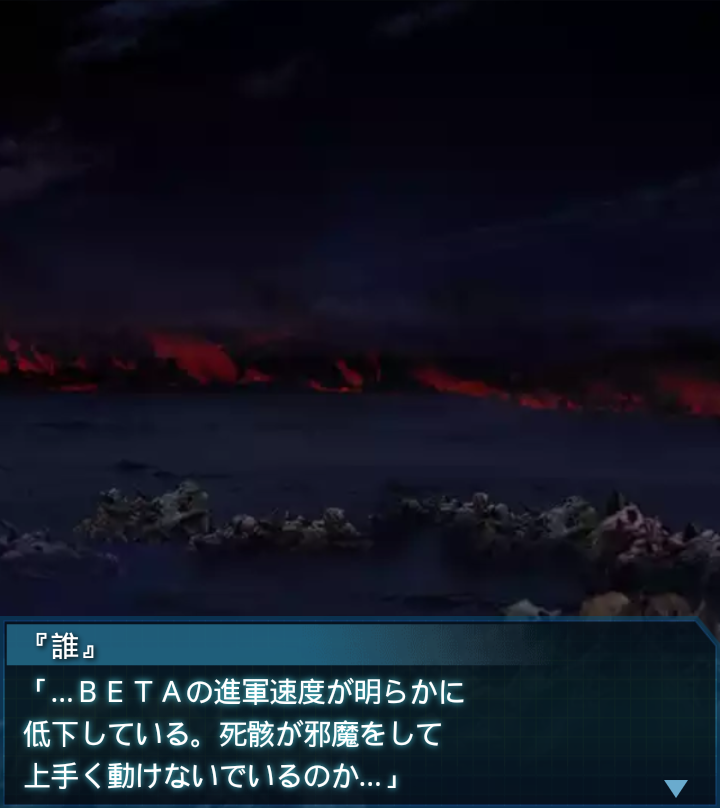
『誰』
「…ＢＥＴＡの進軍速度が明らかに
低下している。死骸が邪魔をして
上手く動けないでいるのか…」
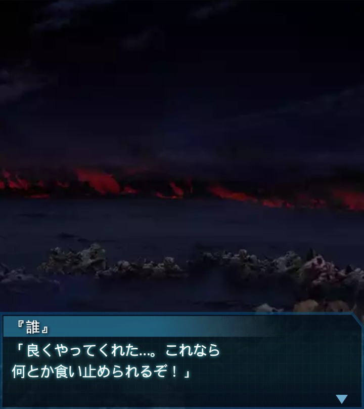
『誰』
「良くやってくれた…。これなら
何とか食い止められるぞ！」
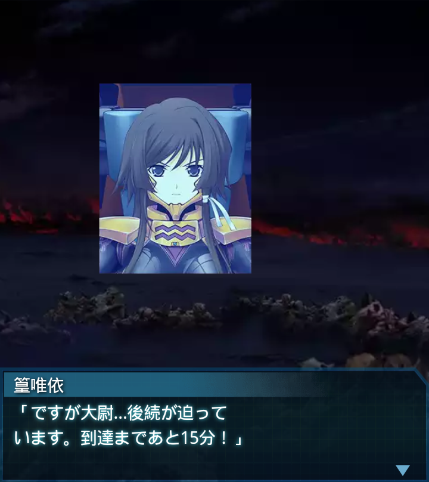
篁唯依
「ですが大尉…後続が迫って
います。到達まであと15分！」
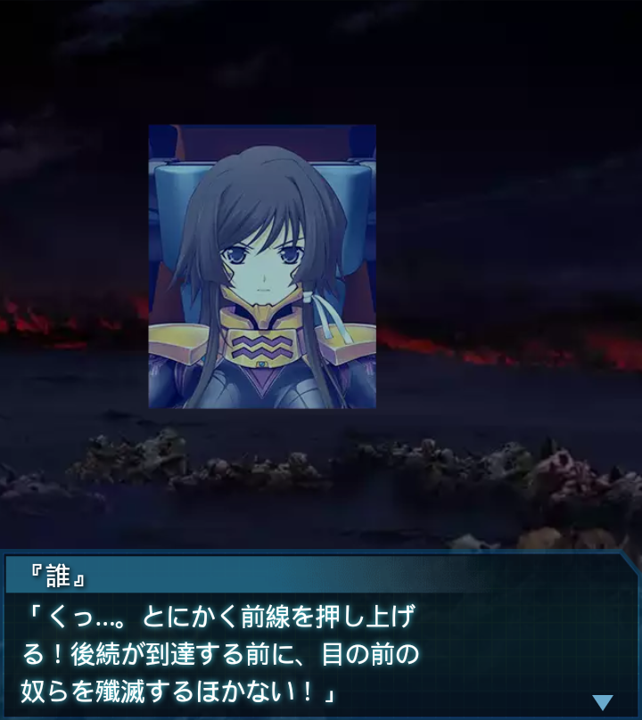
『誰』
「くっ…。とにかく前線を押し上げ
る！後続が到達する前に、目の前の
奴らを殲滅するほかない！」
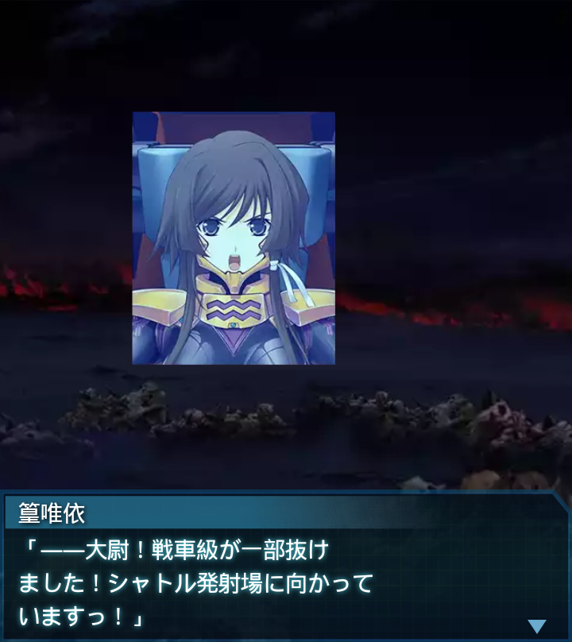
篁唯依
「――大尉！戦車級が一部抜け
ました！シャトル発射場に向かって
いますっ！」
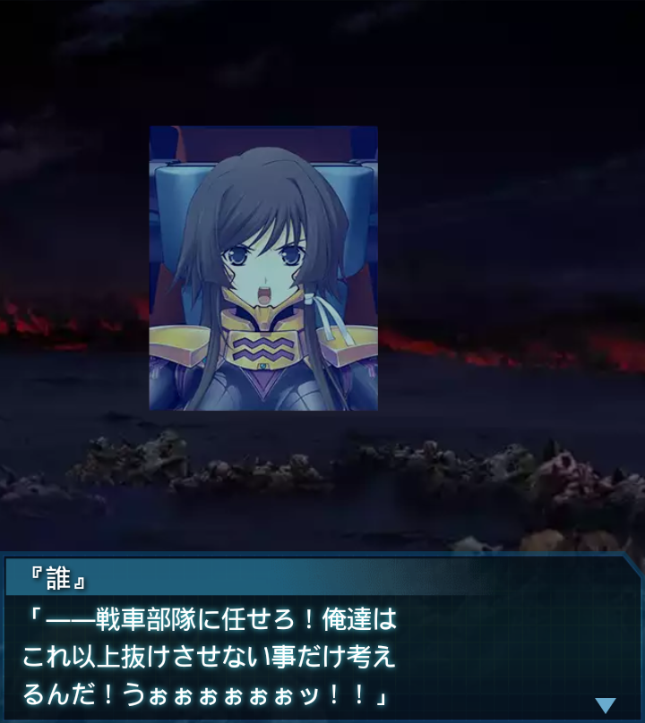
『誰』
「――戦車部隊に任せろ！俺達は
これ以上抜けさせない事だけ考え
るんだ！うぉぉぉぉぉぉッ！！」
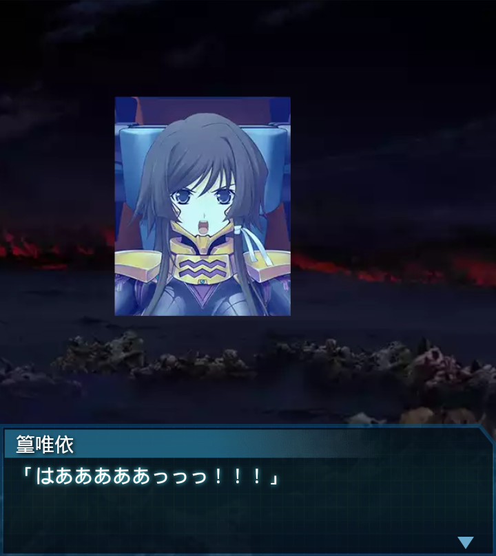
篁唯依
「はあああああっっっ！！！」
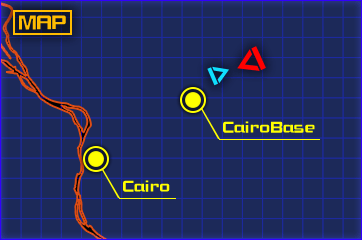
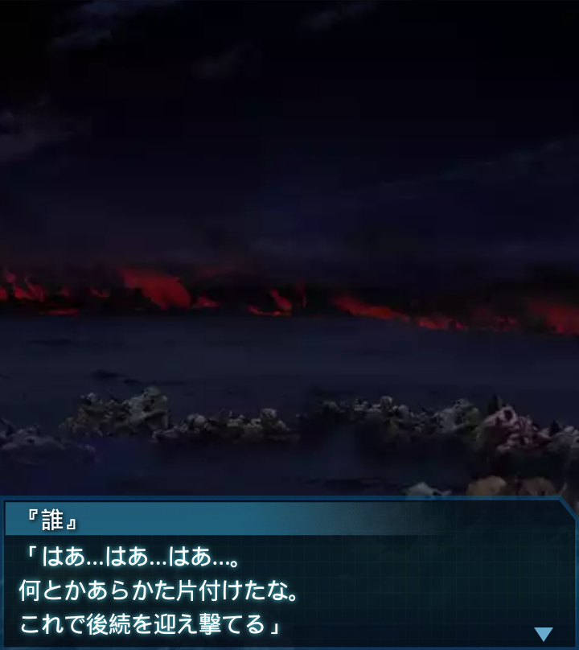
『誰』
「はあ…はあ…はあ…。
何とかあらかた片付けたな。
これで後続を迎え撃てる」
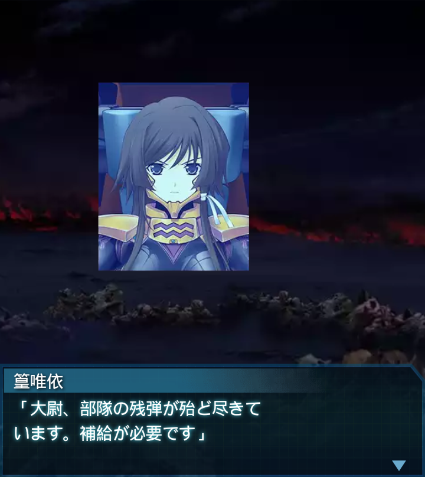
篁唯依
「大尉、部隊の残弾が殆ど尽きて
います。補給が必要です」
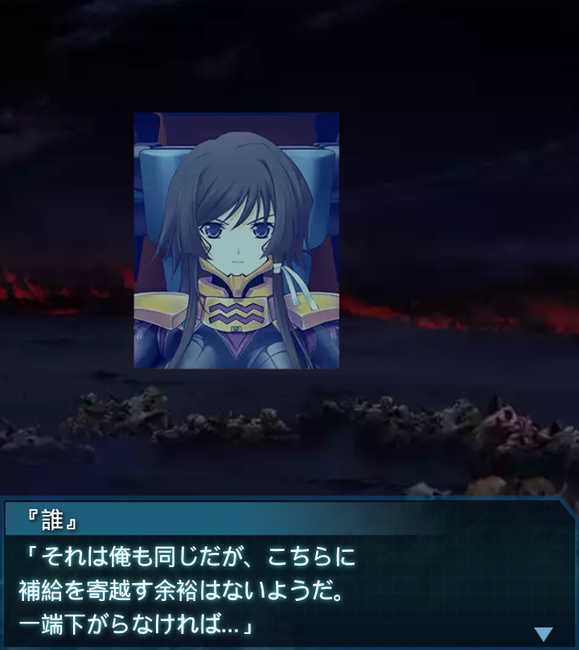
『誰』
「それは俺も同じだが、こちらに
補給を寄越す余裕はないようだ。
一端下がらなければ…」
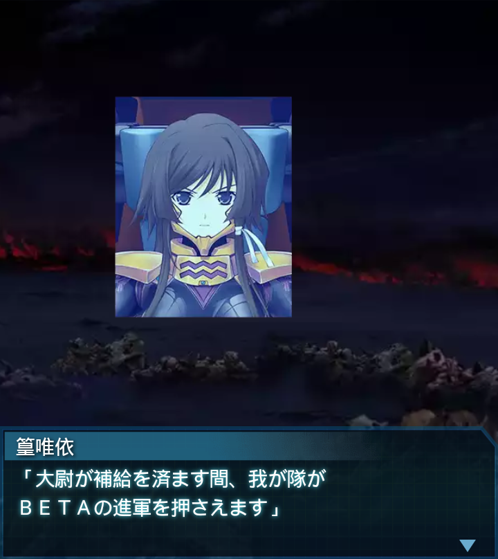
篁唯依
「大尉が補給を済ます間、我が隊が
ＢＥＴＡの進軍を押さえます」
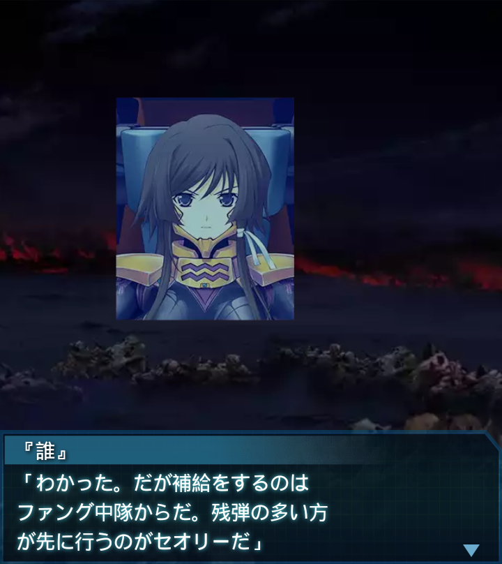
『誰』
「わかった。だが補給をするのは
ファング中隊からだ。残弾の多い方
が先に行うのがセオリーだ」
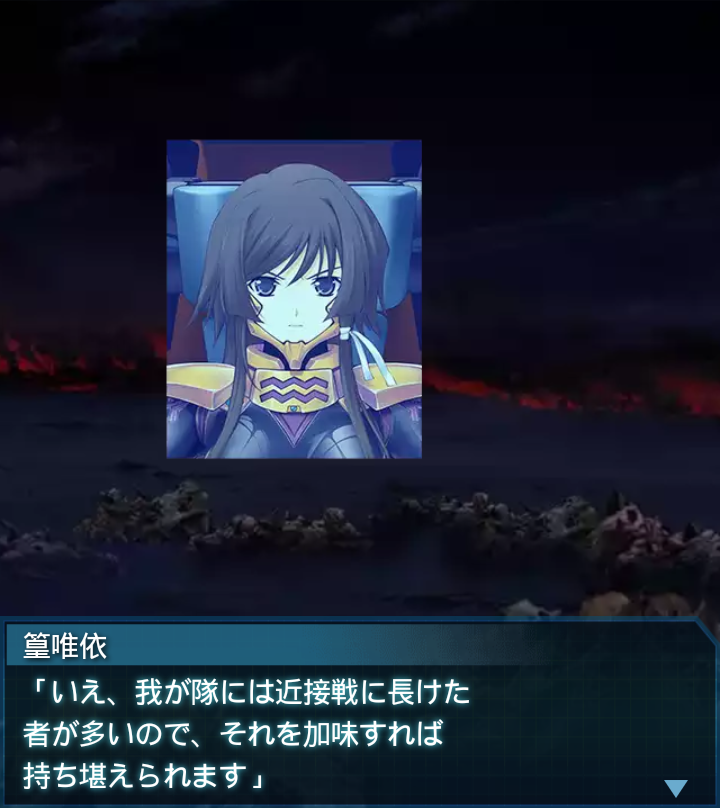
篁唯依
「いえ、我が隊には近接戦に長けた
者が多いので、それを加味すれば
持ち堪えられます」
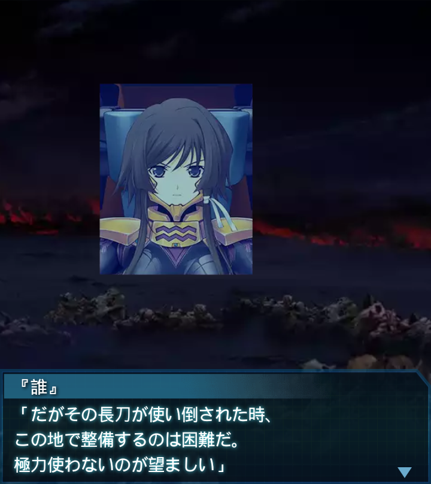
『誰』
「だがその長刀が使い倒された時、
この地で整備するのは困難だ。
極力使わないのが望ましい」
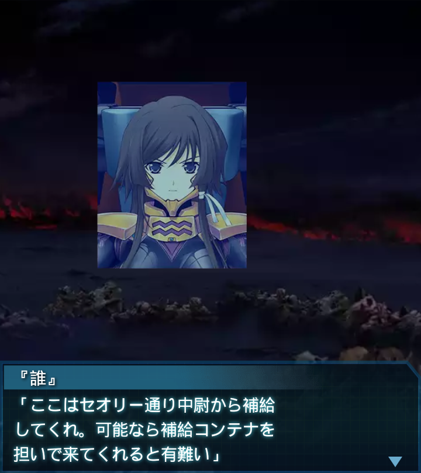
『誰』
「ここはセオリー通り中尉から補給
してくれ。可能なら補給コンテナを
担いで来てくれると有難い」
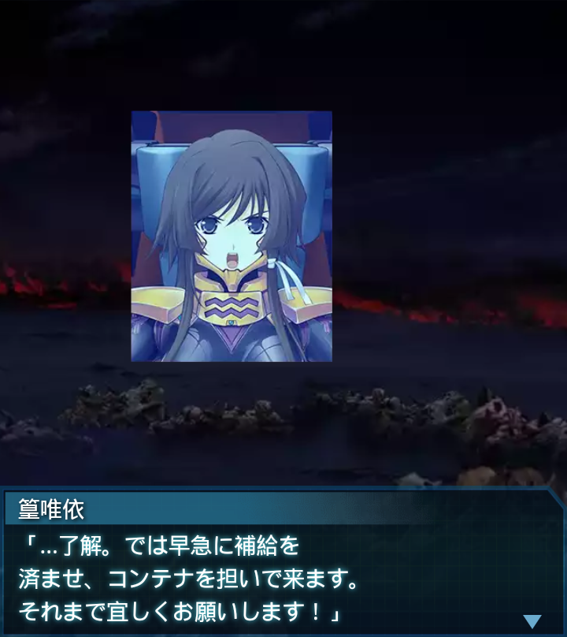
篁唯依
「…了解。では早急に補給を
済ませ、コンテナを担いで来ます。
それまで宜しくお願いします！」
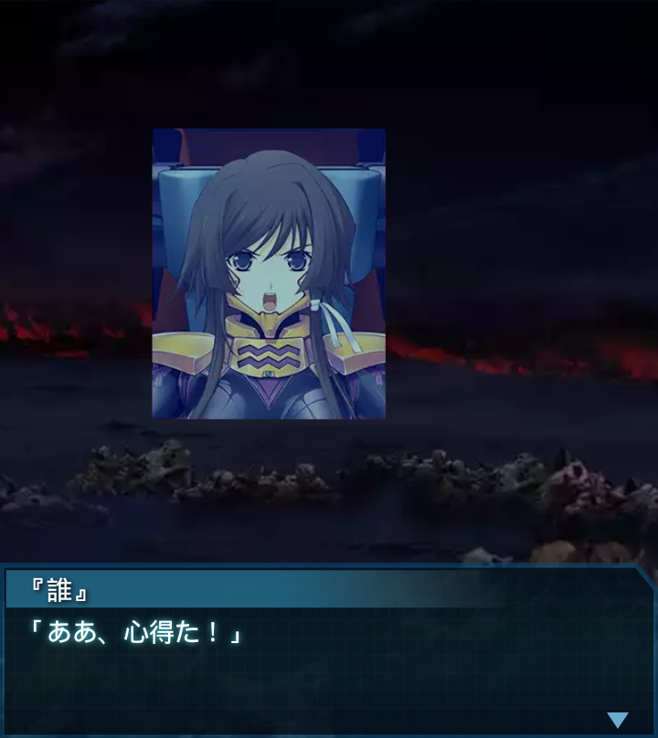
『誰』
「ああ、心得た！」
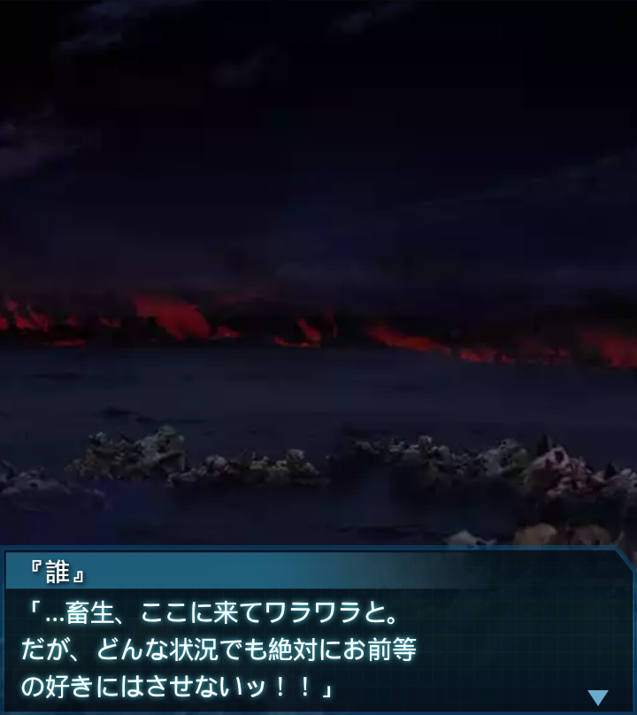
『誰』
「…畜生、ここに来てワラワラと。
だが、どんな状況でも絶対にお前等
の好きにはさせないッ！！」